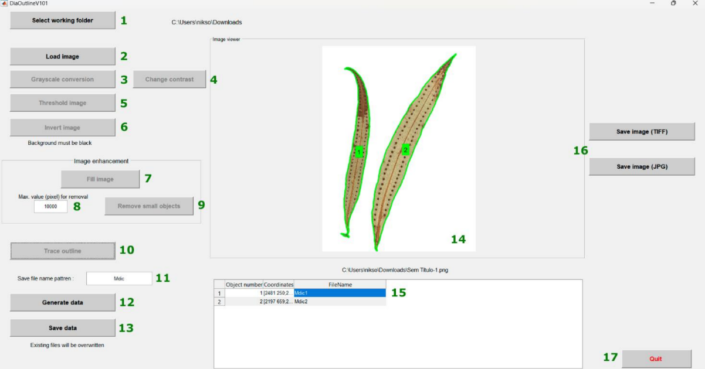

Extracting Contours for Morphometric Studies
Welcome to the DiaOutline repository, a powerful and intuitive tool for extracting contours from images, specially designed for morphometric studies in plant biology and related areas. This software, developed by Wishkerman & Hamilton (2018), uses advanced image processing techniques and Fourier analysis to extract precise contours of objects, such as leaves, fronds and other biological structures. Here, you will find a detailed step-by-step guide to installing and using DiaOutline, from setting up the environment to extracting and exporting data for statistical analysis. In addition, we provide download links for the necessary versions of the software and practical tips to optimize the processing of your images.
What you will find here:
- Detailed instructions for installing Matlab Runtime and DiaOutline
- Step-by-step guide to image processing
- Tips for preparing images
- Download links
Let's get started:
Step 1 - Install Matlab Runtime
Download and install Matlab Runtime 9.3 (only this version works):
Download Matlab Runtime
Step 2 - Install DiaOutline
Download and install DiaOutline from GitHub or our alternative link:
Note: Remember to download the entire folder and unzip it on your computer.
Image Processing Guide
For best results, prepare your images with clean backgrounds (preferably in .png format). You can use:

DiaOutline interface with contour extraction process
-
Select working folder
In this option, you will define your directory, i.e., the folder where all the images are located (you won't see any images here, so don't worry).
-
Load image
Here you will select an image to start the process. Keep in mind that this process can take some time because it processes one image at a time.
-
Change contrast
Adjust the contrast of the image to improve the visibility of the fronds and outlines.
-
Threshold image
Apply thresholding to separate the objects of interest from the background. This will create a binary image where the outlines of the fronds will be easier to identify.
-
Invert image
Invert the binary image if necessary to ensure that the fronds are highlighted in white on a black background.
-
Fill image
Fill in any internal holes in the fronds, ensuring that the object is solid and without flaws before proceeding.
-
Max. value (pixel) for removal
Set the maximum pixel value for the removal of small objects or noise that are not of interest.
-
Remove small objects
Remove small objects or artifacts that may be present in the image, leaving only the fronds of interest.
-
Trace outline
Start the process of tracing the outlines of the fronds. This step will extract the precise outlines of the fronds (or other objects of interest), which will be used for further analysis.
-
Save file name pattern
Here you will define the name of the image (don't worry, you can update the name later in step 15).
-
Generate data
Generate the outline data, such as the coordinates of the points, which can be exported for further analysis in R.
-
Save data
Your data will be saved in .TXT format for use in other tools or statistical analyses.
-
Visualization in the environment
In this environment, you will visualize the images of the board from which you are extracting the outlines. In the example, there are two leaves and two numbers, 1 and 2, which means that it extracted two different shapes from this image.
-
Data visualization
In this step, you will have three columns with information. Column 1: the number of the outline visualized in step 14. Column 2: the values corresponding to the outline of each image; these are the values we will use in R for analysis. Column 3: the name of the species you defined in step 11, remembering that you can change the name here.
-
Save Image (TIFF or PNG)
Here you can save the exact image you are visualizing in the interface from step 14 (note that it is only useful for visualization and is not necessary for the images).
-
Quit
Here you finish and close the program.
Pro Tips
When mounting photo boards, make one per exsiccate for better organization
Check the threshold carefully to avoid extracting artifacts